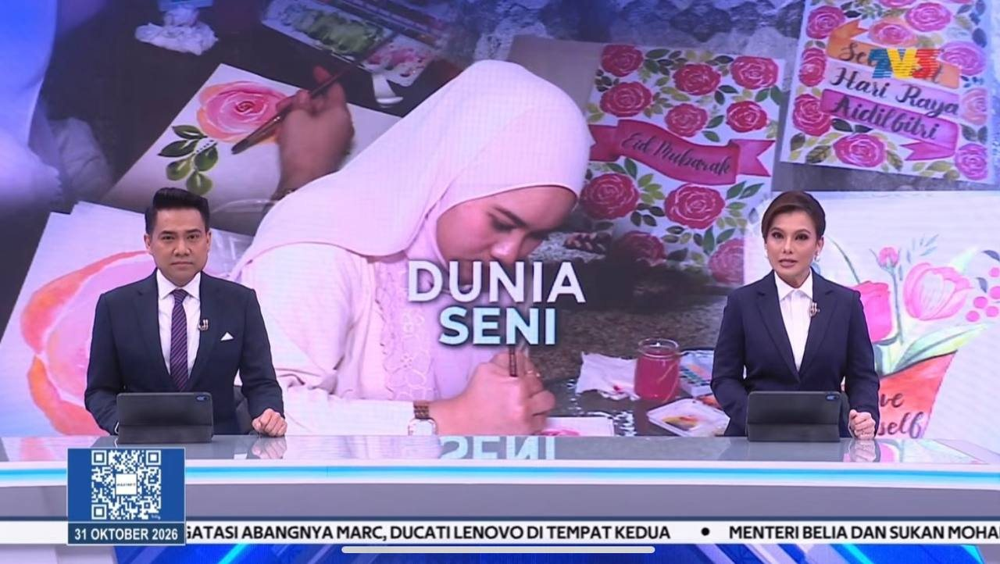
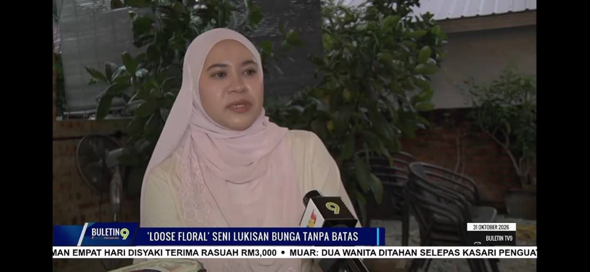
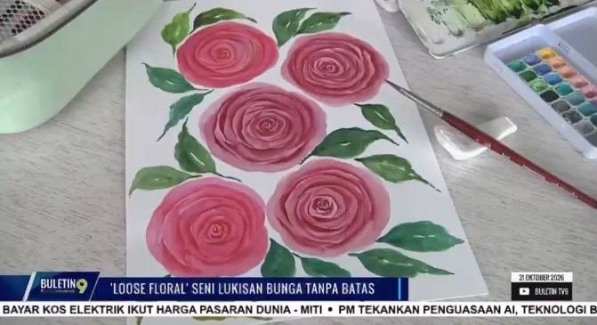
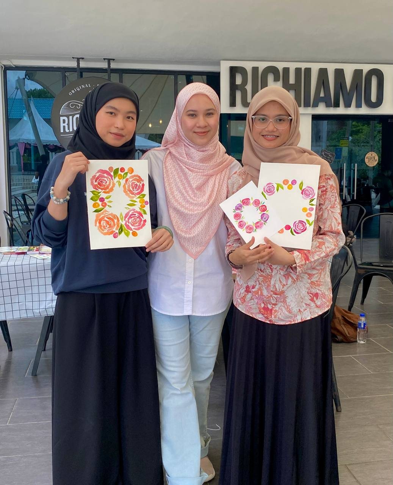
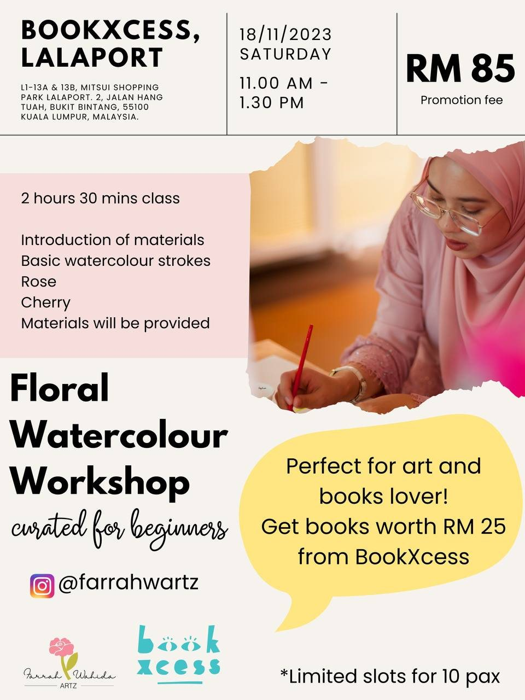

Floral Watercolour at BookXcess
A 2.5-hour beginner session at LaLaport KL, limited to 10 participants. Materials and guided practice provided.
We’ll guide you through every stroke, and you’ll leave with something you made yourself. Come spend a little time discovering your creative side in a relaxed, hands-on class.
Plan a collaborationExplore workshops
Floral Watercolour Workshop · BookXcess, LaLaport

Less Perfection, More Expression
An art enthusiast with a passion for mental health, creativity, and the little joys of slowing down.
I love bringing people together through art. In my classes, we'll discover the art of letting go of control and simply letting the brush dance with colours.
Discover a range of creative workshops, from floral watercolour to cursive handwriting and lettering.
Roses, hydrangeas and tulips: materials, basic strokes and supported practice. Art materials are provided.
Discuss this session on WhatsAppTwo television features introduced Farrah's loose floral practice to a wider audience, both broadcast on 31 October 2026.

Buletin Utama TV3 · Dunia Seni. A relaxed, expressive style of floral painting.

Buletin 9 · TV9. A practice guided by colour, water and imagination.


A 2.5-hour beginner session at LaLaport KL, limited to 10 participants. Materials and guided practice provided.
An outdoor session with IIUM Arts Club. Participants explored floral wreaths and cards, then shared their work.
With S'Perience at Picco Polo Cafe, Penang. Participants made DIY Hari Raya cards; donations went to Penang Deaf Association.
Worksheets and fountain pens. Shared on Instagram on 24 June 2024.
Programmes attended: 2022 Community Based Tourism, Balai Seni Negara · 2020 Program Jelajah Keusahawanan Seni · 2018 Bengkel Seni Melakar dengan Arang, Rumah Seni Selangor · 2018 Loose Floral Watercolour Workshop, Balai Seni Negara
Real moments from the sessions: learning the basics, trying something new, leaving with work made by hand.






Historical event details only. The promotional price shown is not a current workshop rate.
Pricing reflects preparation, facilitation, materials, group size and travel. Final scope and fees are confirmed in writing.
Per-participant ticket pricing or an agreed host/facilitator share. Materials and booking responsibilities are agreed first.
A tailored quote based on group size, activity, duration, materials and location.
A custom proposal for your objectives, participant count, venue and facilitation needs.
Tell me your preferred date, location, audience, group size and the experience you have in mind.
We confirm activity, timings, materials, responsibilities and terms before anything is announced.
I facilitate the session so your guests can settle in, learn and enjoy making.
Planning a workshop, private session or creative partnership? Share the date, place and group size, and we'll see what works.
farrahwartz@gmail.com@farrahwartz